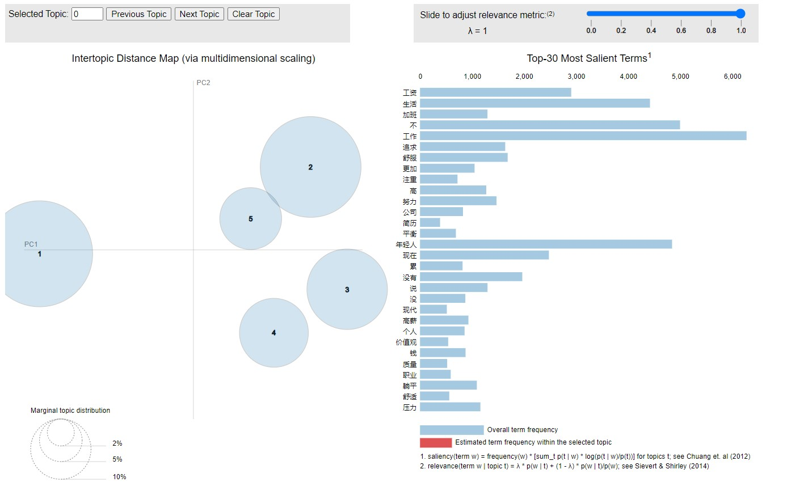

Our research aims to implement a variety of tools to gather extensive information across multiple topics and platforms. This collected data will then be analyzed and categorized based on opinion and sentiment. Ultimately, we will evaluate the findings and synthesize a comprehensive conclusion.
Data Collection and Preprocessing
The dataset comprises various attributes extracted from social media platforms, mainly Zhihu, encompassing the author's profile name, profile description, homepage URL, gender, timestamp of the post, follower count, number of comments, likes, thumbs-ups, and the content posted. To collect and preprocess this data, Python programming and ChatGPT algorithms are commonly employed. These technologies facilitate web scraping for data retrieval and subsequent preprocessing tasks to refine and structure the collected information for analytical purposes.
Document-level Analysis(1)
The research employs a multifaceted approach incorporating several methodologies to facilitate comprehensive analysis. Firstly, sentiment analysis techniques are utilized to discern the prevailing sentiments expressed within the collected data.
Following this, Latent Dirichlet Allocation (LDA) clustering techniques are employed, leveraging both Term Frequency-Inverse Document Frequency (TF-IDF) and Document-Term Matrix (DTM) representations. This facilitates the identification and grouping of related documents into coherent clusters, thereby revealing underlying themes and topics.
Document-level Analysis(2)
Additionally, Principal Component Analysis (PCA) visualization techniques are employed to provide insightful visual representations of the data, aiding in the exploration and interpretation of complex relationships.
Furthermore, the research integrates aspect-based analysis methodologies to delve deeper into the specific components and facets of the data, enabling a nuanced understanding of opinions and sentiments pertaining to distinct aspects.
Validation and Interpretation
We engage in manual scrutiny of a diverse array of posts across various clusters is imperative to gain a nuanced comprehension of the prevailing dynamics within each cluster. This methodological approach ensures the acquisition of comprehensive insights, enabling the formulation of interpretations that are substantively grounded in the data. By meticulously examining individual posts within distinct clusters, researchers can discern intricate patterns, thematic variations, and emergent trends, thereby facilitating a rigorous and informed analysis of the dataset.
Code Example
def tokenize_and_remove_stopwords(text):
# Tokenize the text using Jieba
tokens = jieba.lcut(text)
# Remove punctuation marks using regular expression
tokens = [re.sub(r'[^\w\s]', '', token) for token in tokens]
# Remove stop words
tokens = [token for token in tokens if token.strip() and token not in stop_words]
return tokens
# Drop rows with missing values in the '回答内容' column
df.dropna(subset=['回答内容'], inplace=True)
# Tokenize the text, remove punctuation marks, and stop words
df['tokenized_content'] = df['回答内容'].apply(tokenize_and_remove_stopwords)
# Display the tokenized content
print(df['tokenized_content'].head())